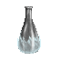
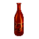
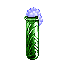

| Picture | Name | Description | What it does | Where it's from |
 |
Instant Heal | A clear vial labeled "Instant Heal" | Heals hp 1000 max per ih | One shop, Pricey |
 |
Mend | A dark bottle with a red cross | Mends a small amount of hp | Random drop of nameless surface crits |
 |
Protice | A Silver-White bottle with a frosty base | Casts protice on use | Random drop of nameless surface crits |
 |
Protfire | A bright red bottle with pictures of various fire dwelling creatures | Casts protfire on use | Random drop of nameless surface crits |
 |
Poison | A tan vial with paintings of spring flowers | Poisons | Random drop of nameless surface crits |
 |
Cure poison | A silver bottle with a strange smell | Cures poison | Random drop of nameless surface crits |
 |
Agil | - | Raises agil +1 per use to a max of 18 | Drops in Mormar. |
 |
Major | - | Raises con +1 per use to a max of 25 | Drops in Mormar. |
 |
Strength | - | Raises str +1 per use to a max of 18 | Drops in Mormar. |
 |
Youth pot | - | Restores youth | Drops in Mormar. |
 |
10oz youth pot | A bottle containing a very viscous bubbling fluid. | Restores youth per use (10 uses) Used for upgrading killer weapons |
Trade 10 nork yp's with an npc above forgottens. |